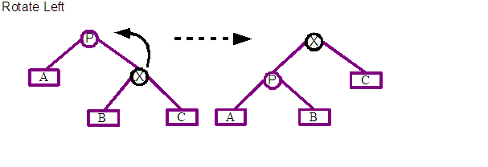
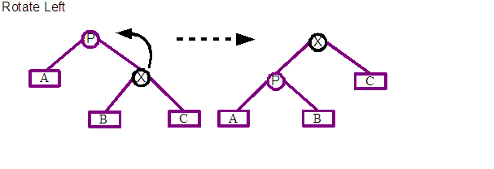
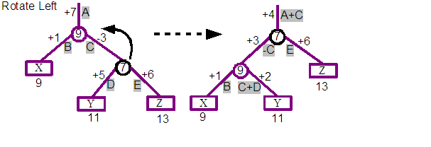
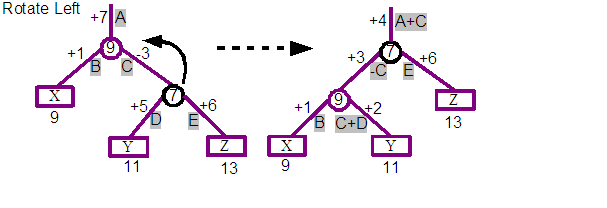

---- Document still being written ----
| Contents: | Design and implementation of the Dolphin Demo, including comparisons with Udanax-Gold. |
|---|---|
| Intended audience: | Programmers and general readers interested in what's happening under the covers. |
The Dolphin Demo is an open-source implementation in @link:dolphin_smalltalk@ of a subset of the Udanax-Gold hypermedia server together with a thick-client UI for MS Windows that explores some of the features of the Xanadu system. The author undertook this application to learn how these systems work, how they might be applied in practice, and to provide something for others to evaluate while the far greater effort of producing production grade versions was undertaken.
The efforts applied to the demo were driven by an appreciation of the design of Udanax-Gold at a shallow level and a glimmer from the possibilities offered by broader xanalogical systems. Investigations into xanalogical systems basically involved working through the writings of Ted Nelson, but the lack of any representative systems left one short of understanding how these features could be used day-to-day and be connected into existing systems. On the design and code side, difficulties were encountered while trying to work with the released Udanax-Gold code. The size of the released code, the generality of it, the incompleteness of the release, lack of running system and lack of documentation placed significant barriers on its considered application. A small degree of relief was found courtesy of a couple of critical papers original written by XOC and recently made available at the @link:sunless_sea@ website. These writings shed enough light on the code to confirm the authors suspicions on its value, and were instrumental in pressing on with the project in creating the simple demo implementation.
The process of developing the demo helped the author appreciate some of the core constraints and pressures on the design. A typical course would be close scrutiny of the reference material, followed by confused head scratching, charging off and coding up something, running into unforeseen complexities or limitations, capped with some new insight on returning to the original reference material. The intention of the demo was not to implement a feature-by-feature clone of Udanax-Gold, but instead to explore the basic features of a xanalogical data server. Repeated iterations of work would reveal earlier misunderstandings, these were often ignored in an attempt to cover as much ground as possible rather than to refactor the code to production grade level.
The authors knowledge of the Ent data structure and the basic elements of the Udanax-Gold design derive from two papers written by members of the XOC team, plus repeated travels through the published Udanax-Gold source code.
@link:ted_nelson@ for the Xanadu system, and the @link:xoc@ team for the Udanax-Gold design and implementation.
The authors employer, @link:intware@, for enthusiastically allowing me to corral real and fictional holiday allowances to enable me to work on the implementation over a couple of months during the summer of 2002.
Many thanks to you all.
David Jones. March 2003
The core of the demo implementation is a limited version of the Ent data structure which can be found at the heart of Udanax-Gold. The Ent was invented by @link:eric_drexler@ and named after the long remembering trees from The Lord of the Rings by J.R.R.Tolkien. The Ent turns out to be a very interesting tree based data structure with some very useful characteristics even though it turns a number of standard computer science assumptions on their head.
The demo only uses a limited version of the ent, reducing the level of generality and most certainly mis-interpreting some of the finer aspects of the implementation. Overlaid features that significantly improve the performance for walking root-wards through trees, and reducing space overhead when associating data with nodes shared across versions has been ignored. Even with these limitations in mind, the hope is that others will find the following details useful as an introduction.
The Ent tree, or variations of it, have applicability beyond xanalogical applications. Udanax-Gold builds on the full Ent a very powerful and generic document storage system, but it could be considered in a number of other cases. One example would be for tree based data structures with integrated versioning capabilities; for example XML documents or complicated BOM structures.
There are a number of core features that we want to be supported by a hypermedia system that should be enabled by the low-level data structure responsible for storing the document contents and the links and references between them. Some of the required features of this low level structure that we want to aim for are:
The contents of a document and the structure defining the different versions and links between their content are split into two layers. The Content layer holds chunks of contiguous sequences of document data. These are connected to one or more leaves of a series of binary search trees each defining the contents of a document.
The structure of the contents is built from a binary search tree whose leaves reference the contents of the document. The root of the tree corresponds to a single version of the document, and walking the leaves from left to right will produce the entire document. At each interior node a split integer indicates the position of the first element that can be reached by its right branch, and all elements to the left will be before this position. This can be used when trying to find the content element at a specific position in the document.
To see how this works, we will step through a few revisions of a document by adding and removing content to it.

Revision A: We can start with an empty document. This is constructed from just a single root node, with no children. We indicate this root with an empty square in the diagram above on the left hand side of the diagram. The section on the right hand side indicates that the A revision of the document has no contents.
We have coloured this revision of the document grey, and labelled it as A. In the forthcoming steps we will assign a new colour and ascending letter for each revision in turn.

Revision B: We will now add some content to the document, in this case the word "One". A new root node is created that is associated with the second revision of the document. A leaf node is created, which represents the "One" string, and the leaf node is then added to the new root as its single child. The document is now considered to be at revision two.
Before continuing, you can see that our diagram still contains the first empty root node. In fact at this point we have two revisions of the same document. The first is empty, the second contains the single "One" word. The contents of each revision is indicated at the top right of the diagram, with one row per revision and the contents of each revision with an indication of which revision the elements of that revision were first added to.

Revision C: We will now add a second word to the document, "Two", after the first. A new root node is again created, and a Split node is added as its single child this time. A split node is an internal node and does not directly reference content, instead it has two children nodes; known as its left child and right child. An integer split value is also kept, and it defines the position of the first element referenced by the right child or any of its children. As we see in the diagram above, the round circle indicate a split node, with "One" as its left child, and "Two" as its right child. The split value of the node is shown to be the value 4. This is the position of T character of the right "Two" child. The "O" of "One" has the position 1.
One of the interesting aspects of the data structure is starting to emerge. The third revision C uses as much of the previous revisions structure as possible, so in this case we see that the "One" of C's "OneTwo" content is actually shared with the previous B revision. The printout of the content for each revision at the top right of the diagram shows that each revision is keeping the same contents, even as further revisions are re-using some of their contents.

Revision D: We will now add a third element to the end of the document, "Three". Again a new root is created, together with a split node as its child. The right child of this split is set to the new "Three" value and a split value of 7 is stored. The left child connects into the split node of revision C. Again we are reusing previous revision structures. With more complicated revisions there is no limit to the number of levels of structure that you might share with other revisions.
Revision E: We will add a fourth element, "Four", but this time rather than appending to the end of the document, we will instead insert this new element between the "Two" and "Three" content. A new root node and child split node is created. The left node connects into C's child. The right child connects to a second split which it in turn connects to the "Four" and "Three" contents. If you trace the leaf nodes from left to right starting from the E root node you will see that the desired document content will be generated. Note that in this case the split node from the revision D is not included in this later E revision.

Revision F: In this case we will try to remove one of the existing elements for our next revision, in this case the word "Two". Even though our new revision shouldn't contain "Two", we want the previous revisions to keep their previous content, and so still contain "Two". To implement this we define a new root node and child split node. The split node then connects to "One" on the left and the parent of "Four" and "Three" on the right. Tracing the leaf elements left to right for F should produce the desired content. The one difference from previous constructions is the +3 associated with the split 4 node that was created. This is used to compensate for the deleted three characters with respect to the positions of elements later in the tree. This will be discussed in detail in later sections.
This concludes our little visual step through the creation of a few revisions of our literary "numbers" document. We have shown multiple revisions of a document being built up, older revisions not being modified while newer revisions reuse as much of their structure as possible. Primitive operations of insert and delete have been shown.
One issue that we have only briefly dwelled on is how to use the data structure that we have built up. The single case we have concentrated on is retrieving the entire contents of a specific revision of a document. This is achieved by walking all leafs of a tree starting from the left most one and walking step-by-step to the right most one..
Another primitive operation is to retrieve an element at a specific position in a document, or a range elements from one position to another.
Looking back at revision B we can see that retrieving the element at position 1 produces the character "O" (assuming 1-based numbering scheme). This can be found by looking at the single child of the B root, and then just a simple #at: request on the contents of that leaf node.
Retrieving the element at specified position is more interesting for revision C. Assuming we want to retrieve the character at position 5, then we can make use of the split value of the Split child of the C root. This includes a value of 4, which is the position of the first element that could be found by following its right child. So to retrieve the character at position 5, we start at the C root, find its child, see that 5 is greater or equal to the split value of 4. Follow the right branch, and knowing that the first element of the found "Two" content has a global position of 4, then we can easily find the the second character of its content, "w" is the character at the global position of 5, for revision C.
Moving onto finding the character at the 5th postion of revision D, then we can follow a similar path. Starting at the D root, we can see that 5 is less than the split value of 7 for its child, which will send us down its left branch. At that point 5 >= 4 and so we end up at the "Two" leaf node again, and the letter "w".
The more interesting case is with revision F. Again we are looking for the character at position 5. Starting at the F root, we travel to its single Spit child node, whose split value is 4. As 5 >= 4, we follow the right child, and we this time we make use of a the +3 displacement value that has been associated with the right branch. The displacement value is applied to the position 5 that we had been looking for, so that when we arrive at the end of the right branch we are now looking for the position 8 (5 + 3). As 8 < 11, we take the left most branch and retrieve the last but second character, "o".
The displacement that we applied while navigating leafwards has enabled the F revision to share the 11 split node from the E revision. This split node when defined for the E revision had a global position of 11, as the F revision has deleted the "Two" content before it, that nodes position within the F revision is actually 9, but changing the split value of that node would then break the E revision. We could have duplicated the original split node for this revision, and update the split value with its new value. Instead by associating the displacement value with the new split node added for the F revision, we are able to reuse and so share this node with revision E.
So the neat thing about the displacement idea is that even if we insert and delete elements, later revisions can still share split nodes from earlier revisions, even if the global positions of those nodes now differs across the numerous revisions that share the node.
When walking rootwards, from leaf to root, the inverse of the displacement is applied. This enables you to learn the global position from any element in a leaf node. Those of you on the ball will have realised by now that tracing a path up to a root is actually an involved issue, because each node could have multiple parents, and so a leaf node could have a number of roots. This is not a common problem with tree data structures! We will investigate this issue later.
The Demo implementation stores a separate displacement for both the left and right children of a split node. Whenever you follow either the left or right branch, the displacement is applied to the position that is being found.
The Udanax-Gold Split node implementation has a number of differences from the one described above.
We ended off the above description of walking the nodes of a revision tree leaf-wards, with the issue of instead walking from a leaf to its root. Normally this is a very easy operation in tree data structures, assuming suitable parent references are kept. The complexity in this case is obvious if you look at the "Three" leaf in the final diagram for revision F. The "Three" leaf node actually has two parents, one is the 7 split node associated with revision D, and the other is the 11 split node associated with revisions E and F. Which of the two parents should be followed to find?
For the demo each non-leaf node includes a revision number associated with the revision for which it was originally created. Whenever one walks the tree root-wards, a desired revision is also known which can be used to resolve the parent choice. So for example, if we want to learn the global position of the first character of "Three" for revision F, then we want to walk root-ward from its leaf node. There are two immediate parents, the 7 or 11 split nodes. We will take the 11 split node as that node was created with revision E, which is closer to revision F than the D of the 7 split node. At this point we again have two parent choices, and the 4 split node of revision F is obviously the preferred route. At that point its single parent is the revision F root and so we have reached our destination. Applying inverse displacements we can calculate that the T of "Three" is at the global position of 8 for revision F.
A revision number is not a simple integer, but a branching number with a format such as "1:4:1". The first revision is "1", the second "2", and so on. If a second revision is derived from the first revision, then that is known as "1:1:1" with the next on that branch being "1:1:2".

Reviewing the diagram we can see that revision "2" has three following revisions, "3", "2:1:1" and "2:2:1". A branch is considered the path from the root revision "1" to the specified revision. For example "1", "2", "2:1:1", "2:1:2", "2:1:2:1:1" and beyond form a branch.
We discussed earlier in this section navigating root-wards and deciding which one of possibly multiple parents should be followed. Given a desired revision we choose the parent whose created revision is closest to the revision we are interested in. A revision has to be on the same branch as the desired revision to be considered for navigation, and amongst all those that match that criteria the nearest revision before or equal to the desired revision is chosen.
There are significant differences between the demo and Udanax-Gold in this area.
The advantage of a tree as a search data structure is that the height of the tree is O(logN), where N is the number of nodes in the tree. This feature only holds if a tree is balanced. For example in the worst case nodes form a chain from the root with children always being to the left. This will form an tree whose height is O(N), or effectively a linked list.
The Ent appears to use the Splay Tree method to balance itself. This is an amortised balancing technique, and so balances a tree across a number of operations rather than after a single specific operation. This kind of balancing enables the cost of balancing to be spread out over many operations. It can also adapt the structure of the tree to reflect the changing pattern of access to the tree over time.
The process proceeds by applying a splaying operation on every access to the tree; this includes find, inserts and deletes. When accessing a tree, the node that is to be effected is first found, then the splaying operation will pull that node towards the root of the tree by applying a series of rotation operations about the node's parent.
 

The two basic operations of the algorithm are rotate left and rotate right. Both right and left rotations are shown above with before and after states. X marks the node that is to be rotated, and P is the parent of X which X is going to be rotated about. A, B and C represents sub-trees of any depth that are children of X and Y. The most immediate point of interest is that the X node moves root-wards up the tree.
The algorithm uses sequences of left and right rotations, depending on the path between the focused node and the root of the tree, to pull the focused node to the root of the tree or one of its immediate children. This pattern of rotations tends to bunch up single chains of nodes producing a 'bushier' tree, and assuming locality of reference should reduce the access cost for succeeding node references.
Choosing what type of rotation and about whom is defined using the following recipe.
Please investigate the following references for a better description of the algorithm, together with analysis of its performance and example implementations.

Before investigating the effects of rotations on displacement values, a quick walk through the example tree that will be experimented on. The three trees shown above are in fact the same tree, and depict three separate walk through from the root; the first finding the element at position 1, the second position 2 and the third position 3. The tree itself contains the string with three characters "XYZ". "X" was originally added at position 9, "Y" at 11 and "Z" at 13. The version of the document that we are now querying is the result of deleting the original elements at positions 1 through 8, 10, 12, and from 14 and upwards, so only leaving these three characters.
If we following the centre trace, which shows the process of finding the element at position 2. The Yellow line indicates the path followed by the search. Starting with the goal to find the element at position 2, we apply the displacement +4, so that we are now looking for the element at 6. The 7 split node indicates we should follow the left child, where we apply a displacement of +3, so that we are now looking for the element at 9. The 9 split node indicates we should follow the right child, where we apply a displacement of +2, so that we are now looking for the element at 11. We finally arrive at the leaf and correctly find the "Y" element. Additionally you can see that our original query for position 2 has been converted through a series of steps to a query for position 11, which is the global position at which "Y" would have been originally added to in its revision.
Thinking back to the Demo implementation of Split nodes, and you will remember that a displacement is associated with left and right children of those nodes. This feature is not part of the standard binary search tree and so we will have to resolve the impact of that on the splaying algorithm.
 

The above diagram shows the impact of a rotation towards the right, and and below that a rotation towards the left. The second example is actually a continuation of the result of the first, and so after a rotate right, followed by a rotate left, we end up with the original tree again.
If you take a closer look at the top pair of trees, the left hand tree is the before, and the right hand tree is the result of rotating the 9 split node towards the right. You can see in the result that the 9 split node is now the parent and the previous 7 parent is now the child of the 9 node. The three nodes X, Y and Z are still in the same left to right order, but we see that the Y leaf is now the child of the 7 split rather than the 9 split.
The original tree includes a displacement for each arc, and these are labelled starting at A for the +4 at the top of the tree. The author calculated a simple set of transformations for each of the branches of the tree to ensure that requests will produce the same answers for the tree produced by the rotation. The intention is that the rotations should preserve the semantics of tree, and simply improve the cost of navigation. Reviewing the resulting tree, we can see that the positions 1, 2 and 3 still lead to the characters "X", "Y" and "Z" respectively. The calculations are shown using the labelled displacements from the first. For example the displacement at the top of the tree is now +7 and is the result of adding the A and B labelled displacements from the original tree.
A second complexity enjoyed by the demo implementation that is beyond the trees discussed in the splaying paper, is that a node in an ent trees may have more than one parent. This is a very significant difference from standard binary search trees!

We are again going to show a rotate right operation, but this time the 9 split node has two parents. One is the root node for its revision D. The other parent is the 7 split node of a later version.
Looking closely at the before tree you can see that from the D revision root node, position 1 finds "X" and position 2 finds "Y". Starting above 7 split node which is from a later revision we can see that position 3 finds "X", position 4 finds "Y" and position 5 finds "Z". Node that X for example has a different position for each revision.
If we look at the result of rotating right about 9 split node you will see something interesting. From the start we can see that the 9 split node from the D revision is now the parent of the 7 split node which is actually associated with a later revision than itself. This breaks one of our assumptions that nodes created by later revisions may reference nodes from older revisions, but nodes created by older revisions may not reference nodes from later revisions.
Tracing down from the D revision root node we still find that position 1 finds "X" and position 2 finds "Y". But now we find that position 3 would find "Z". We have broken the integrity of revision D as it can now includes Z in its content, which it didn't before the operation.

The solution the Demo uses for both of these issues in this case would be to duplicate the 9 split node before the rotation. This is indicated in the diagram above, and you can see that the result preserves the integrity of both revisions. Note that the D revision nodes are now completely untouched by the operation.
The general algorithm that is used is to duplicate a node if it and another node involved in a rotation were created by different revisions.
The obvious downside of this tactic is the cost of duplicating a node. This turns us away from one of the goals of the data structure which is to share as much as possible of the structure between revisions. Over time this tactic could end up duplicating a significant proportion of all nodes in the tree until there is effectively a separate tree for each revision. The demo currently ignores this issue as much as possible by just attempting to minimise the number of rotations that occur by only rotating on insert and delete operations rather than finds. This significantly degrades the quality of the Splay tree algorithm for balancing the tree, and wouldn't be acceptable for a non-demo version of the software. The author hasn't analysed the situation enough to be able to suggest an alternative strategy.
Udanax-Gold use of splaying inspired the use of it for the demo. The details of the Gold implementation are unknown to a very shallow lever by the author, but it is clearly implemented in a significantly cleaner way than that found in the demo. Part of the Gold implementation uses an interesting table driven mechanism. The use of canopies and separating displacement values into their own nodes feels like it might side step the mess that the Demo gets into when handling multiple parents. A closer analysis of the Gold implementation in action is going to be critical in deciding whether splaying has any value in the long term as the tree balancing algorithm for alternative Abora implementations.
The earlier discussions over the use of the tree data structure for sharing content between revisions glossed over the mechanisms for deciding what nodes need to be created and to whom they connect.
The insert and delete algorithms both rely on the splaying operation to pull the nearest node root-wards to one of a small number of known patterns. At that point a predefined set of mutations can be applied to achieve the insert or delete.
First the existing leaf node that the new content is going to be inserted before or in the middle of is found, and its parent is splayed towards the top of the tree.

If the existing leaf node happens to be the first leaf node in the tree and the new content is going to be inserted before it, then a simplified insert mechanism can be used. This creates a single split node as a child of the revisions new root, the left child of the split is connected to the leaf representing the new content, and the right child to the child of the previous root node.

A similar simplified strategy can also be used if the new content is good to be appended to the end of the tree. This creates a single split node as a child of the revisions new root, the left child of the split is connected to child of the previous root node, and the right child is connected to the leaf representing the new content.
In the case of the CollectionLeaf which is an optimisation for representing an array of primitive values, if the insert operation is found to apply to a position within its content, then the leaf will have to be split into two new leafs, with the start of the second leaf matching the position at which the new content will be inserted. A new split node will take the place of the existing collection loaf node, and will connect to the new leaf nodes. This operation will modify the nodes used in existing revisions, but it preserves the existing semantics. Once this splitting is completed, the insert operation continues against the new right leaf.
The final case is the insert immediately before an existing leaf, and that leaf is neither the first or last in the entire tree for that revision. There may be two patterns of node structure at this point. The node which we will insert before is either the left child of the parent or the right. For simplicity we re-splay in the case of being the right child. The end result is that we can be confident of the pattern of nodes which we are going to be inserting into.

In this case you can see from the diagram above that two new split nodes are created to allow the insert of the new leaf, and a tie in with nodes.
First the parent of the leaf node that is to be deleted is splayed towards the top of the tree.
Similar to the insert operation, for simplicity the standard delete operation has only been implemented for one side of the tree. If the node to be deleted is a right child of its, parent then a second splaying occurs to force the child to be a left child.

The parent node and all nodes to the root are then duplicated, before updating the connections to remove the desired leaf node. For example in the diagram, the parent of the Two leaf to be deleted, would be duplicated together with its parent the 4 split node. These node would still reference the same leaf nodes, and so would effectively produce a parallel parent chain from the Two leaf.
Again optimisations may be made for deleting the first and last nodes in the tree.
The standard case at this point would just involve replacing the duplicated split node with the sibling of the deleted node, and then updating the split information to take into account the deleted content. Back to the diagram we see that the duplicated 7 split node is removed, and replaced by a reference to the original Three leaf, which is the sibling of the delete Two leaf. Finally the displacement values for the duplicated 4 split node is updated to take into account the missing content from the new revision.
Currently the author does not know how Udanax-Gold approaches this problem.
Transclusion enables the sharing of content by quoting from the original source. Transclusion is a primitive function of the implementation, which even hyperlinks are created from.
Transclusions are implemented under the covers by making use of a layer of indirection between the leaves of an Ent tree and the actual content. A content element contains a collection of parent leaf nodes belonging to possibly different document trees that it is a member of. This allows some content to belong to multiple documents, or that multiple documents quote the same content.
Reviewing the Transclusion summary from the first paragraph of this section, we see "...by quoting from the original source". In fact in the current implementation there is no distinction between the document that originally contained a reference to the content and subsequent references. A missing feature from Udanax-Gold would be storing the owner of the content, which would either by the author or the owner/publisher.
The UI for the Demo specifies a transclusion operation by altering the behaviour of the copy-and-paste action. When pasting, rather than just inserting a copy of the text that was initially copied, instead the original text is quoted.
Lets first consider a simple case. A document revision holding a single character "X". We can draw another tree diagram as we have numerous times above.

The second diagram is peeling back the conceptual skin of the X leaf node on the first, to reveal that the leaf node actually doesn't hold the "X" character, but in turn references a BeDataHolder object holding the "X" character. The value of this indirection is that the same "X" character can be included (transcluded) other times in the same document revision, other revisions or even other documents. In all cases the leaf node representing "X" will reference the same BeDataHolder.
BeDataHolders include a collection of parents, which are all the leaf nodes that reference it and so represent its contents. This enables you to find all revisions and documents that transclude this contents.
The example has so far considered simple content such as a character, but later on we will find that the content leaf can reference other types of content elements, such as BeEdition or BeWorks which in turn could represent significant quantities of content.
The CollectionLeaf is an optimisation for the ContentLeaf. Imagine the user adds the phrase "Aaron A Aardvark" in one operation. Creating 17 leaf nodes and 17 BeDataHolders each holding a single character of the phrase would be a performance disaster. CollectionLeaf and its paired BeContentHolder content element is an attempt to reduce the overhead. In this case a single CollectionLeaf leaf node would be created, that would reference a single BeContentHolder that would holder the 17 characters as a single String object.
If the same contents was transcluded to a different document, a new CollectionLeaf would be created that would be added to its ent tree, but it would reference the same BeContentHolder instance and so have access to the 17 characters.

What if another document simply wanted to transclude the "Aardvark" section of the phrase. In that case again a new CollectionLeaf would be created that would be added to its ent tree, and it would reference the same BeContentHolder, but would record that is was only interested in a region of the entire contents of the holder, positions 9 to 16 inclusive.
The Udanax-Gold equivalents for the ContentLeaf and CollectionLeaf classes and the content element classes that they reference are somewhat of a mystery to the author at the moment.
The class hierarchy for the tree nodes is strongly inspired by the Udanax-Gold implementation but includes some simplifications, especially for the Leaf classes as a result of a lack of knowledge on my part for how this group of classes relates to the content classes.
Content elements are the elements of the content held by editions. We have covered the holders of primitive data and collections in the discussion of what ent leafs represent. There are a number of more interesting examples of these elements, including the edition content element which enables composite contents to be built up.
These classes are known as range elements in Udanax-Gold.
Works define the identity for a document, and its edition provides its contents.
A work holds a single edition which is considered the current content of that works revision. As editions are read-only, any attempt to modify the contents of the edition results in a new edition that incorporates the existing content and the desired change. A work must then be revised to reference the updated edition.
Revising a work to a new edition requires one to have previously gained a lock to the work. This gives one the exclusive rights to revise the work as many times as one likes while the lock is held. The unlock operation gives up the revise right for others to take. A unlock automatically occurs when either the front-ends reference to the work is lost, or the connection from the front-end to the server on which the work is stored is lost.
This limitation of a single work modifier at a time on the face of it seems to be a little restrictive. For example a user could lock a Work for the majority of the day, restricting any other user of the system from modifying it during that time. This problem is side stepped in a very interesting way. A work is simply the identity for a document, with its content held by its associated edition. Any number of works may reference the same edition, so this allows a second writer to create a new temporary work on the original edition of the first work which they can then edit freely. Once the lock on the original work is released, they can then gain the lock and merge in any changes from their edition as need be.
A work can be frozen which toggles it into a permantent read-only state. Once frozen it will not allow itself to be revised to hold a different edition as its contents. As editions are effectively immutable, that safeguards the works content from changing. Even in a frozen state, the works list of endorsement can still be modified.
A work can store a list of previous revisions of itself. These are frozen works so their content can not be changed. The history is extended each time the work is revised. The current time is associated with the frozen work.
The work holds an ID object which uniquely identifies the work on this machine.
isFrozen flag is used.Clubs enable the classification of users and agents for authorisation purposes.
Clubs are implemented as subclasses of Works. The demo makes no use of clubs other than in association with endorsements, and then only as an object with a well known identity.
TODO
An edition forms effectively an immutable object, and modifications to its contents will result in a new edition containing the original contents and the modifications.
The contents that an edition holds can be both collections of simple data elements such as characters, or it can form a composite structure holding further editions and works.
The edition holds a revision number for itself, and is able to respond with the next valid revision number after itself. It records the highest revision number it has given out so that it can properly generate subsequent revision numbers.
The BeContentElement class hierarchy is a subset of the content classes supported by Udanax-Gold. An instances of this class specify the content of documents.
The demo implementation is closely modelled after that of Udanax-Gold.
Given two documents, what are the similarities and the differences between them? This is a feature supported by word processors, text editors and custom differencing tools such as the unix diff tool. Most of these implementations start with two arbitrary text and can calculate a set of differences from them. The quality of the results varies tremendously based on the input texts, uniqueness of terms, quantity of repetition, and the number of differences. Results may be at the granularity of individual lines or even down to words or characters within a line. The resulting differences are usually broken down into primitive insert, delete and modification differences. So if a block of text is moved from the start of a document to the end, this will be recorded as a delete from the first document, and an insert into the second. This simplification unfortunately distances the results from the user level actions that originated these changes, which the user would obviously prefer to see as their changes. Differencing tools can often support an extended form of this involving three files, with one considered the elder version of the second and third files.
The demo implementation is completely different from the standard techniques highlighted above. The high level spin on this is that the demo finds the similarities between two documents, rather than the differences. The demo can accurately indicate moved and copied blocks of text in addition to the simple insert, delete and modification differences one usually finds. It also wont get confused by some of the issues that degradate the results from the classic differencing tools.
The downside of the demo implementation is from its inherent implementation. It works by finding what content is shared by the two documents that are being compared. So given a simple text edition. If that content is transcluded by another edition, then those editions will be seen as being the same - because that actually reference the same content elements. But if one was to retype in the contents of the first edition in a new edition, so it appears to be exactly the same, then those two editions would be seen as completely different. Even though each element of the two has the same character value, they aren't the same character element, so they are different. So even though the tool can provide superior results to the standard differencing techniques, it is useless for texts entered without reference to each other.
To help with the problem of parallel entered texts, it would be possible to pass this through a standard differencing tool, though it would probably lead to even more confusion.
As mentioned the implementation works by walking through two editions and building a map between each of the content elements that they share. It can handle a content element being including in a different location between the two, or an element being included more than once.
The user level API for an edition is the
BeEdition>>sharedWith: anotherEdition method which
returns an ordered collection of mappings. The mapping is simply a
mapping from a range of elements of the first edition to another
range of elements in the second. There could be multiple mappings
for the same element if the same content occurs more than
once.
Once returned to the UI, the steps required to show this to the user by painting is relatively simple.
TODO: show screen shot of demos rendering
For the case of painting a different background colour, it's just a case of walking the mappings and a sequence of alternative colours, and just painting them.
The thin vertical mapping window that draws a connections between the individual characters of the two editions has an interesting issue in that the connections do overlap, so it's not possible to ensure that useful connections are not obscured. The simple strategy the author took was to paint the largest mappings first, and then overlay the smaller mappings on top of that.
Each of the leafs of the source edition are walked one by one. For each leaf, the content element that they represent is fetched, and in turn all of the leafs which represent it. These other leafs are then walked, and any which aren't members of anotherEditon and its revisionNumber are ignored. Of the remaining leafs, their global positions are calculated and a mapping between the global position of the source leaf to the global position of the each of these leafs is collected.
In the case of CollectionLeafs there is also an additional test to make sure that there are some elements of the content element shared between the subsets of that content held between the two leafs. If there is a match, then the range of common elements between the two is calculated and a suitable mapping created.
TODO: diagram showing the combining of mappings
Once all the mappings have been collected for the leafs of the edition tree, then a further processing step is employed to convert the mappings into a more coherent and convenient result for use by clients. Mappings are sorted by their global positions, and contiguous mappings are combined over their combined range. The actual algorithm used is potential expensive, and involves multiple passes over the mappings until no improvement in a processing round can be found.
The requirements for the demo differences were gathered from a few comments around the Udanax-Gold behaviour. The implementation was done from scratch so could well miss out on some critical features and performance ideas from the original.
One aspect of the Udanax-Gold implementation is its apparent ability to work on documents from any coordinate-space. This is one area where standard differencing tools are very weak, and can only be constructively applied to text. The author assumes that given a two-dimensional image of a face, if a second edition of the image was created by painting the eyes green, that a differencing operation between these images would properly highlight that the pixels making up the eyes have changed. This might be particularly interesting with collages.
The performance of the demo is hampered by the need to walk root-ward up ent trees from the leafs to find if a content element is present for a specific edition and revision. Udanax-Gold incorporates some significant performance optimisations in this area courtesy of the Canopy systems.
On a minor note, the Udanax-Gold sharedWith method
returns an edition rather than the primitive collection used in
the demo.
An endorsement is a tag composed of a club and ID that can be associated with an edition on club. It is the primitive means to filter out the results at the application level. Endorsements can be used to define the type of content.
Endorsements are introduced to an edition or club with the
endorse: message, and removed with the
revoke: message. The collection of endorsements
associated with the content acts as Set, so duplicates are not
kept. The Endorsement class is a simple information holder holding
a pair of IDs. The first ID is that of a club, and the second can
be of anything. One possibility for the second id is to be that of
a work or edition that describes the endorsement for human
readers.
A number of endorsements are built into the system to define server supplied edition wrappers types such as FeHyperLink. These are associated with built in system clubs. Any client is also able to create their own endorsements, and they would probably use the club of their author or user.
Endorsements are also used to filter out results of requests,
specifically transclusionsFilteredBy: and related
methods. This method returns a collection of the content elements
that are transcluded by this edition, which are then filtered
according to the supplied list of endorsements. This operation can
be useful to find all the hyperlinks referencing this document for
example.

More to show the diagrammatic style that will be used to indicate endorsements, than for any great revelation, the above diagram shows a block of text in an edition with a number of endorsements.
Pretty early on in the authors research on Udanax-Gold the idea arose that endorsements were cryptographically strong statements by an author. This could be used to sign a document or comments written by the author. In practice on the surface that this is not the case, as the endorsement is simply a club and ID pair, and seems to be primarily used as a type system for filtering. Thinking on the fly, it could still be possible that the endorsement links to an edition, by its ID, that could then be a cryptographic signature calculated from the contents of the document at the time.
A second issue is with removing an endorsement, which is described as revoking an endorsement. Udanax-Gold seems to simply remove the reference, though there is a note that something better should be attempted in the future.
A third issue is to build up a reasonable collection of endorsements to try and minimise any duplication of meaning. One area for definition would be using mime-types for defining the contents of the edition. The second ID of the endorsement could be to the text name of the mime-type; "text/plain" for example.
A further issue is why introduce the concept of endorsements, in a way that just appear to be limited version of links, but with a fixed format with a low overhead, and tied into the filtering mechanism for results. Is that it?
There does not appear to be an Endorsement class in Udanax-Gold, so a Pair of IDs is probably used.
The demo supports very simple filtering of results based on a flat and operation for a collection of endorsements. Udanax-Gold includes a far more flexible filtering mechanism, built from the standard coordinate-space with support for standard boolean operations together with union and intersection operations.
Considering the Demo is classified as a hypertext system, it has taken us a long time to reach a description of the implementation of the hyperlink that one would assume was a primitive operation of the software. In fact hyperlinks are implemented using transclusions. I find this particularly interesting.
There are a number of aspects of hyperlinks as present in Udanax-Gold, and mostly implemented in the demo, that prove to be interesting in comparison with the standard implementation as supported by html.
Hyperlinks are constructed from more primitive elements of the system; editions and transclusions. Transclusions are used to define the end-points of the link, and a structure of editions is used to connect the multiple end-points into a single hyperlink edition. Endorsements are used to tag the types of the editions required for the structure, and also used to indicate the type of the link.
As no new primitive constructs are needed to implement hyperlinks they technically don't need to be part of the server, but for convenience they are present as part of a number of edition wrappers used by front-end clients.
The other presence on the server for hyperlinks is a series of pre-defined endorsements owned by the System Admin club.
As an example, imagine that we want to write a comment that corrects a mistake in a document that was written by someone else. In this case we would have a starting edition that contained the text of the original text. Now we would like to make a comment connected to the relevant a part of the original text that corrects the mistake. So we create a new edition that contains the text of our comment. We would then have to connect the comment into the original. we create one SingleRef that transcludes the original text that we believe contains the mistake. A second SingleRef is created that contains our comment edition. Finally we create a HyperLink that transclused the first SingleRef that locates the original mistake. and also the second SingleRef locating our comment. We would also like to tag the comment as being a correction of the original text. This is achieved by endorsing the HyperLink using the predefined ID for corrections.

Now during the display of the original text, the client software can request all the comments that have been made on the text, especially mistakes, corrections and contradictory opinions. This is achieved by requesting all the content that trancludes the original text, and only includes those editions that are links of a suitable type. Our comment would be found, and as it was marked as a correction the reader decides to investigates. One of the ways that this could be shown would be highlight the questionable original text, and shown beside it the comment, so we can see precisely what is being corrected.
The basic mechanism and edition structure was inspired from Udanax-Gold, but in direct comparison the demo is much simpler and suffers a number of weaknesses and limitations against the original Udanax-Gold implementation.
Ids are associated with Works and Editions and act as a permanent identification number for retrieving and comparison purposes.
Ids are a relatively undeveloped area of the demo. A simple Id wrapper class around an integer value is used, and is unique only across the single system that the demo is running on. A number of system defined ids are generated at start-up for critical system clubs and identification for shared endorsements such as text and hyperlinks. Once start-up is complete, ids are given out in a monotonically increasing order.
A simple WorksStorage singleton is used to allow one to find the work or edition associated with an Id. This instance is also used as the root of the reference scheme that hold onto works. Works can be explicitly added and removed from the works known by the storage scheme.
Ids in Gold are integrated into the wider coordinate-system, so there are IdSpaces, Regions and such, with Ids being a position within the space. An id is composed of the three aspects:
One obvious thing is that IDs can exist beyond a single installation.
The author is not aware at the moment how Works can be found from their ID. Also the referencing system in Gold is assumed to support a full distributed garbage collection section where works and editions are dropped when no longer referenced.
The demo uses a very simple implementation of persistence for contents. Its aim is to provide the absolute minimum to enable a reasonable experience for experimenting and learning about the Demo system for users. The existing persistence mechanism does allow documents to survive beyond editing sessions, but is weak on runtime crashes and recovery from disk corruption, mutation of data structures with newer versions of the application, and finally reading and writing times are proportional to the size of the entire database of documents.
Upgrading the persistence mechanism would be a critical step in extending the scope of the current application from demo status to something strong enough to be entrusted with valuable data.
The persistence mechanism is built on the native object serialisation mechanism provide by @link:dolphin_smalltalk@. This is similar to mechanisms supported by other Smalltalk implementations and also Java. Given an object it will convert the content of that object and the graph of all the objects it references into a stream of bytes. That stream of bytes may in turn be converted back into a graph of objects that are equal to the original set. Special cases such as handling singleton objects are supported by overriding the object actually dumped, and running fix-up code when de-serialising the byte stream.
Persisting of objects only occurs during the shut-down of the system and on explicit request by user. The system is locked up while the persisting is happening. All objects referenced by the works storage are dumped out in a single action, and placed in a workstorage.abora file. A single backup of the existing file is kept in a workstorage.abora.OLD file.
Gold appears to use an incremental persistence solution, dumping out modified objects at the end of a transaction. The author also assumes there is a transaction style system based around the DiskManager consistent idiom. There is additionally a lot of effort around grouping related objects together apparently to pick up advantages around clustering disk data into pages.
TODO: Server loop
TODO: FrontEnd/BackEnd object split
TODO: Client caching
TODO: show how a Work and editions plus links could all fit together to from a rich document
Attention needs to be drawn to the visibility of objects and structures in the system from the point of view of a consumer of the programming API. The programmer of a front-end application that uses the demo API talks in terms of content elements, endorsements and objects of that ilk. Under the covers that are entirely oblivious to the Ent data structure and things such as ContentLeafs.
TODO: example usage of API
$Id$